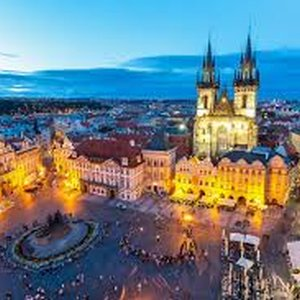
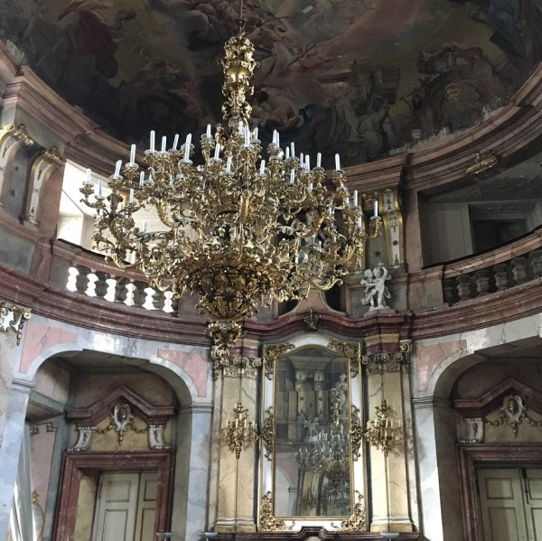
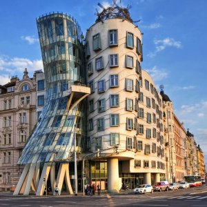
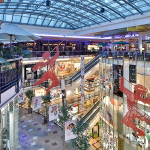
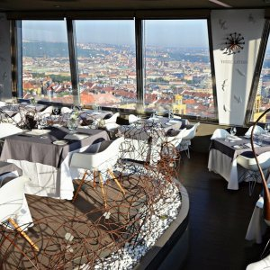
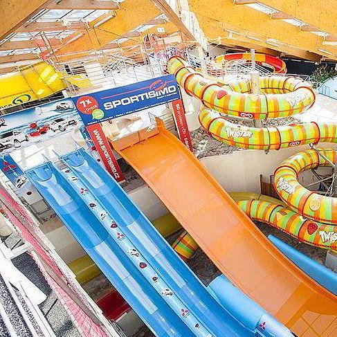
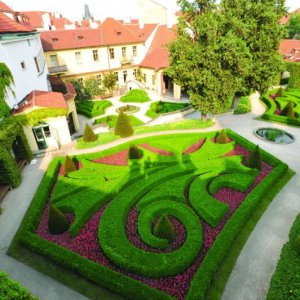
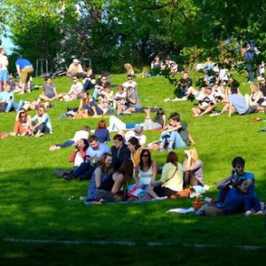
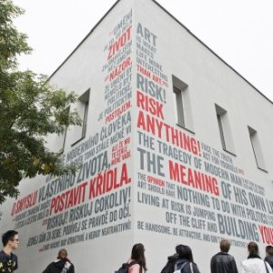
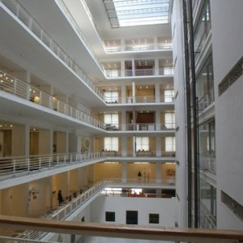

Make your choice:
Old Town Square
Place website
Fantastic historical place with an old astronomical clock, which is one of the European wonders.
Staroměstské nám., 110 00 Staré Město
Colloredo-Mansfelds Palace
Place website
The hidden jewell. Fantastic historical palace in Baroque style. The movie Amadeus by Milos Forman was shot here. The entrance is very cheap - Only 1 CZK ... 0,01 EUR.
Karlova 189/2, 110 00 Staré Město
Dancing house
Place website
Great place for an evening drink with an outstanding view of Prague Castel and the Vltava river bank. This modern building is present in every architecture text-book.
Jiráskovo nám. 1981/6, 120 00 Prague 2
Paladium
Place website
Rebuild barracks shopping mall with local and international brands. There is a food court on the upper floor.
Náměstí Republiky 1, 110 00 Prague 1
Prague TV Tower
Place website
Wonderful modern place 200 meter above the ground with a bar and restaurant. Great views, decent prices.
Mahlerovy sady 1, 130 00 Prague 3
Petrin lookout tower

Place website
An observation tower close to the centre of Prague. It strongly resembles the Paris’ Eiffel tower and is one of the best view points in Prague
Petřínské sady 633, 118 00 Praha 1
Mind maze escape room
Place website
Mindmaze is one of the top-rated ones on trip advisor. Escape rooms are a great way to try something a little different with a group of friends.
Balbínova 32, Praha 2, 12000
Aquapalace Praha Čestlice
Place website
Biggest aquapark in Czech Republic. Pools, slides, saunas, whirlpools, masages, everything. By city bus 45 mins from city centre.
Pražská 138, 251 01 Čestlice
Vrtbovská Zahrada
Place website
Amazing terrace garden in the French style. Very romantic place with low tourist traffic. Great for couples, newlyweds etc.
Karmelitská 373/25, 118 00 Prague 1
Riegerovy sady
Place website
Nice english style park with great view of the Prague castle and city centre, most tourist miss this one. Great place for a picnic and afternoon chill-out.
Riegrovy sady 28, 120 00 Prague 2
Galerie Dox
Place website
Modern art gallery. Provocative exhibitions, fun pieces of art. This place is Very popular among young artists.
Poupětova 1, 170 00 Prague 7
National gallery
Place website
Biggest painting exhibition in Prague. You can see here works of Czech and foreign painters.